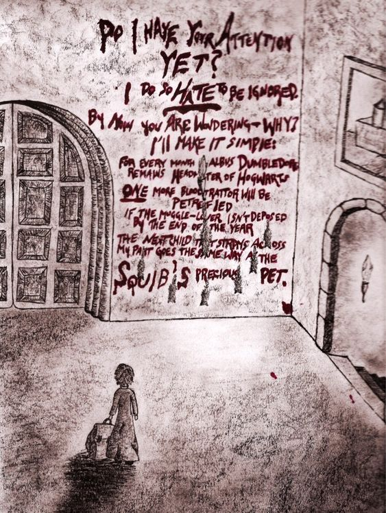

Chapter 8

Provocations
Later that afternoon, when classes were over and just as it seemed people had started to process and move past the shock of another attack, Rigel, Draco, and Pansy overheard Daphne Greengrass talking loudly to a number of their year mates in the common room. When they heard the name “Black” echo clearly over the low murmur of assorted conversations going on about the room, Rigel was all for ignoring it, but Draco scowled and Pansy drew in a slow breath before turning on her heel and marching right over to where Greengrass held court with Davis, Crabbe, and Goyle on a loveseat by one of the fireplaces.
Draco followed a moment later and Rigel, after giving into a tired sigh, followed after.
“Say that again, please,” Pansy requested in voice whose softness did nothing to hide the steel underlying it.
“Why, Parkinson,” Greengrass simpered, “Whatever are you talking about?”
“I speak only of that which you spoke of first, Greengrass,” Pansy said, not budging an inch, “I would like you to say it again, to my face.”
Greengrass sneered, “I was only saying what everyone else was thinking.” Crabbe looked up from the cauldron cake he was eating with a frown on his face, but Greengrass silenced him with a look, “I mean, it’s obvious, isn’t it?”
“What’s obvious?” Adrian Pucey had ambled up to their group and was looking between Pansy and Greengrass apprehensively. Maybe he’d hoped to diffuse the situation, but Rigel could already tell that Greengrass had been hoping for that exact question, and was only going to play up her pettiness even more now that her audience was growing.
“Just the fact that Black is clearly the one orchestrating all these attacks,” Greengrass said, tossing her hair unconcernedly despite the sudden silence that had fallen in the vicinity at the sound of her accusation being repeated, loudly, for a second time.
“If by ‘obvious’ you mean ‘vicious gossip you made up on the spot,’ then yes, you air-headed twit, that would be considered obvious,” Draco ground out, venom practically dancing off his tongue.
Greengrass snarled, but Pucey held up a hand as though he could physically stem the flow of enmity in the space between Draco and Greengrass.
“Well, insults aside, I really don’t think that’s obvious either,” Pucey said calmly, “Rigel Black has, to my knowledge, never expressed any latent sociopathic tendencies, nor any remarkably aggressive behaviour at all, actually. In fact, I think if I had to pick the least confrontational Slytherin in your year, it would definitely be Rigel Black.”
Everyone looked over to where she was uncomfortably standing a little way away from the argument, clearly trying to avoid getting involved, and Adrian snorted, “Case in point.”
Greengrass scoffed, “Oh, please, Black’s act is so obviously fake.”
“You keep using that word,” Pansy said sharply, “When in fact nothing of the sort is obvious to anyone but you. Why do you suppose that is?”
“Obviously,” Greengrass stressed, “It’s because he’s got you all so fooled by his innocent ‘I just don’t want to be noticed in life’ routine. What a joke. He’s always showing off how smart and talented he thinks he is, and then it’s all, ‘I’m really not that great,’ as if we can’t see how much he loves the attention.”
There was a beat of silence in which most people in hearing range stared at Greengrass with a mixture of incredulity and distaste.
“And, setting that rather transparently insecure statement aside as well,” Pucey said, rolling his eyes briefly, “That still doesn’t seem like a good enough reason to accuse Rigel of attacking those students.”
“And you really ought to have proof before stating your suspicions out loud like that,” Blaise had wandered over from his studying to join the conversation as well, “If nothing else, it’s just good prudence.”
Greengrass lifted her chin, “Of course I have proof. Where was Rigel Black during both attacks?” she looked around as if waiting for an answer, but spoke too quickly for anyone to interject, “We don’t know, because both times he was the last person to return to the common room, significantly later than everyone else and with a half-baked alibi at that.”
Draco narrowed his eyes at Greengrass, “Pansy and I were with him after Longbottom’s attack, and we explained why we were late. Besides which, that was after the actual attack. Rigel was in the Great Hall with everyone else when the explosion went off.”
“The explosion was caused by a time-delayed bombardment hex,” Greengrass countered smugly, “I overheard Professor Flitwick talking about it with McGonagall. He had plenty of time after doing the deed to sneak down and join the rest of us. Weren’t you late to the Great Hall on Halloween, too, Black? Who’s late to the Halloween Feast unless they’re up to no good?”
Rigel blinked at suddenly being addressed, despite the fact that the entire conversation was about her, “Yes, I was. A potion I was brewing took longer than I thought.”
Greengrass smiled like a cat who’d just caught a mouse and was deciding how to eat it, “Oh, you were brewing a potion. How convenient. I suppose you were brewing it alone?”
“Rigel always brews alone,” Pansy said crisply, “As you well know, Greengrass.”
“I was,” Rigel said calmly, “But Professor Snape has a ward up around my lab that clocks my entrance and exit every night. He can attest that between the time I left the lab and reached the Great Hall, I had no time to make a detour to the third floor.”
Greengrass clearly hadn’t expected that, but she got around it quickly, “Everyone knows you’re Snape’s favourite. I don’t think his word is very reliable when it comes to you.”
“And I don’t think second years should cast insinuations on the integrity of our Head of House, Miss Greengrass,” Alesana Selwyn had apparently decided to intervene, Head Girl badge gleaming on her robe front. “Are you quite finished with your baseless accusations?”
Greengrass, apparently, didn’t know when to quit, “They aren’t baseless! His friends can cover for him the first time, but no one knows where he was last night, and it doesn’t make any sense for him to leave a celebration party for his own Quidditch team to go wandering around the castle. Come on, can’t you see it? Underneath that vacant expression is a cunning bastard, and he’s taking you in for all you’re worth.”
“That. Is. Enough.” Selwyn snapped, “Ten points from Slytherin, Greengrass, and don’t think I won’t be explaining to Snape why the first person to make me take points off my own House all year is an uppity little second year with more cheek than brains.”
Greengrass blanched, but stood slowly and walked with as much dignity as she could muster back to her dorm room. Davis hovered uncertainly for a moment before following her friend.
“I’m sure if the rest of you don’t have enough to do, Professor Snape would be happy to assign more homework,” Selwyn added.
The rest of the onlookers dispersed, but Rigel saw several of her Housemates shooting veiled looks of speculation her way. Greengrass’ words may have been openly disputed, but her goal had been accomplished by the way more than a few people looked away quickly whenever Rigel glanced toward them.
Draco observed this as well, and scowled, “Idiots. Don’t pay them any mind, Rigel. It’s obvious you couldn’t attack someone if you tried.”
“What about Lee Jordan?”
None of them were quick enough to pinpoint who had said it, but a small wave of questioning murmurs swept through the common room shortly afterwards.
“That’s true—”
“—heard he was smashed up by the time they found him.”
“Let’s get out of here,” Draco said, turning to head out of the common room.
Pansy put her arm through Rigel’s comfortingly and towed her along after Draco.
Rigel wasn’t exactly thrilled that people would suspect her of all people to be behind this—she was friends with Neville, after all—but she supposed she could see where Greengrass had come up with the idea based solely on her comings and goings.
Draco led them straight to the kitchens and plopped down onto one of the tables with an exhausted-sounding sigh.
“Strawberry tarts,” he said to no one in particular, and a moment later a house-elf came running over with a towering plate of them.
As Pansy and Rigel watched Draco polish away four tarts in quick succession, they shared a small smile and Rigel felt her mood gradually grow a little lighter.
“Save yourself some for dinner, tonight,” Rigel suggested.
“This is dinner,” Draco said, pulling his plate of tarts protectively closer, “I’m not sitting up there with all those numbskulls who think someone like Rigel could be attacking students. Don’t they remember the Sleeping Sickness? Rigel healed half the kids in the school, just because he could, and now they think he’s changed his mind and wants to kill them all?”
“Petrify,” Rigel corrected wryly.
“Whatever,” Draco scowled.
“We can’t avoid our Housemates,” Pansy said reasonably, “It’ll only make it seem like Rigel is guilty, and we’re ashamed.”
Draco nodded reluctantly, “Two more,” he said, and proceeded to tuck away two additional pastries into the pocket of nether space Rigel thought he must keep behind his teeth specifically for the storage of tarts.
“What should we do tonight, then?” Pansy asked as they stood from the table and thanked the house-elves. Binny was nowhere to be seen, so they supposed she was working in another part of the castle.
“I have homework to work on,” Rigel said vaguely.
“No, you don’t,” Draco said flatly, “You finished it all this afternoon.”
“It’s self-study stuff,” Rigel said, smiling innocently. It was kind of fun, vaguely lying to Draco, now that he knew she was doing it but didn’t get really upset over it anymore.
“Okay,” Draco said wearily, playing along, “What are you self-studying, then?”
“Runes,” Rigel said.
Draco looked momentarily triumphant, “Then just come back to the common room with us and ask Blaise.”
“I can’t just ask Blaise every time I want to learn something about Runes,” Rigel said, amused, “I’ll save his help for the really tricky stuff.”
“Sure you can,” Draco said, shrugging, “Blaise loves it when people ask him stuff. I swear, he’s going to be a professor when he grows up, the way he gets giddy over explaining things to people.”
Rigel didn’t think “giddy” was a word she’d ever associated with Blaise Zabini, but she bowed to Draco’s superior understanding of the boy, “All right. Let’s go see Blaise.”
They checked the common room briefly, and the dorm room too, but the half-curious, half-speculating glances from their Housemates were too oppressive to stay for long, and they didn’t find Blaise there in any case. Eventually they found him in the Library, but it was times like these that Rigel regretted not being able to share the Marauder’s Map with her friends.
Blaise looked up from the book he was perusing and gestured to the empty seats at his table, “To what do I owe the pleasure?”
“Blaise, you saw us less than an hour ago,” Draco said, raising an eyebrow, “Why must you be so dramatic all the time?”
Blaise shrugged artlessly, “Life’s awfully dull without a bit of drama, isn’t it?”
“Dull means predictable and therefore easily manipulated,” Draco said, “I like life dull.”
“What are you working on?” Pansy asked as she took a seat across from Blaise, next to Draco.
“Nothing of interest,” Blaise said with a sigh, turning another page idly. Rigel couldn’t tell if he was reading it or just amusing himself with the pictures. It seemed to be a book on mythology, but Blaise tucked it away as Rigel sat down next to her, “Didn’t you three finish your school work this afternoon?”
“Rigel has more studying to do,” Draco drawled, propping his chin up on his hand.
Pansy nudged Draco admonishingly, “And he came to ask if you could help him with his runes.”
“And Pansy and Draco came to be my mouthpieces, because apparently I am unable to speak for myself today,” Rigel added cheerfully.
Pansy sent her a frank look, “Would you have spoken up for yourself against Greengrass if we’d let you?”
Rigel pressed her mouth shut and glanced away.
“So, anyway,” Draco said, smothering an amused smile at her expense rather badly, “Can you spare an hour?”
“I can spare a lifetime,” Blaise sighed wistfully, “Sure. Do you have what you need here?”
Rigel pulled what she was working on from her bag, which she’d picked up from her dorm when they’d gone through. “I’m trying to figure out what the required polarity for these two runes would be,” she said, pulling out the parchment of the diagram she was working on to show Blaise. “I know one has to be positive and the other negative, but I don’t know which is which.”
Blaise bent over the parchment with a frown, “You’re right… and this is more advanced than I thought you were, Rigel. I think the rune on the East side should be the positive one, and the West side rune should be the negative one. Here though… the North rune… are you sure you need this one?”
Rigel glanced at the paper, “That or something similar to it. Why?”
“Because the North rune should always be a Light rune. Just like the South rune should always be a Dark rune, because South stands for energy and passion, while North signifies stability,” Blaise explained slowly.
Rigel furrowed her brow, “That’s only in Celtic systems, though, isn’t it?” At Blaise’s lifted eyebrow she said, “I’m sure I read somewhere that in the Chinese runic system, which follows their zodiac, the North represents changeability and adaptability while the South represents steadfastness in the form of loyalty. That’s why I have the Light and Dark runes switched.”
Blaise shook his head, “But the European astrological zodiac agrees with the Celtic runic system, because in astronomy the South represents fire while the North represents air. That’s why the Celtic system is more accepted in European schools of thought, and why it’s taught here at Hogwarts.”
Rigel tilted her head, “I can see how fire could represent Dark, being naturally energetic and volatile, but how does air better represent Light? It isn’t any more orderly than fire. In fact, I’d say all the elements leant toward Dark more than Light, simply because Dark magic is closer to magic’s original nature.”
Blaise shrugged, “That may be, but you still can’t use the Chinese runic system if you’re using Celtic runes. What books have you been reading, anyway? It’s like you jumped right into the middle and started learning random facts about runes instead of building your way up.”
Rigel smiled self-deprecatingly, “Yeah, I just picked up whichever books looked the most interesting when I decided to learn about runes.”
Blaise sent her a disapproving look, “I’ll lend you a few of the ones I started with. That should help.”
“Thanks, Blaise,” Rigel said, “I really…” she trailed off. A pair of hands were covering her eyes, and she stiffened in her seat as her magic stirred uneasily in her core. “Hello?”
“Go on then, guess,” Ginny—for indeed, who else could it be?—said from over he shoulder.
“Oh, get off him, Weasley,” Draco said, voice tight. When the hands pulled away Rigel could see Draco clench and unclench his jaw, which meant he was fighting strong feelings of annoyance.
Ginny sighed, “Again? Don’t the Malfoys know how to do anything besides ruin the fun for others?”
“Don’t the Weasleys know how to do anything besides annoy people?” Draco shot back.
“Ginny, how lovely to see you again,” Pansy cut in, smiling graciously while simultaneously—if Draco’s expression was anything to go by—stepping on her friend’s foot, “Getting some studying done?”
“Something like that,” Ginny said, glancing a bit ruefully toward her school bag, which rested heavily on her shoulder, as though weighed down by quite a few books. “Then I saw Rigel and thought I should tell him George is out of the Hospital Wing, and probably looking for you guys.”
“Why?” Rigel asked, “Fred already apologized to Draco after the game yesterday.”
Ginny shrugged, “He’ll want to do it himself, of course. I guess that’s it then. Bye, Slytherins.”
She headed off, waving at them over her shoulder as she walked away toward the History stacks.
“That girl is so weird,” Draco muttered.
“That girl is tired,” Blaise commented idly, looking after Ginny with a mildly interested expression, “She has dark circles under her eyes, and her hair hasn’t been washed since yesterday.”
“Blaise!” Pansy pinned the dark boy with a glare, “You’re not supposed to say such things about a lady’s toilette.”
“So you noticed, too?” Blaise said, seemingly unconcerned with Pansy’s disapproval, “It’s a bit early for her to be that stressed over winter exams. First year isn’t all that difficult, and I gather she is not unskilled enough to warrant any real anxiety over academics. What could be the source of her disheveled appearance, then?”
“It’s none of our business,” Pansy said firmly.
With that, Blaise let the topic go with a shrug and turned back to studying Rigel’s diagram, which was actually an assignment she was completing for Flint. Blaise helped her work out the rest of the kinks, which Rigel thanked him for profusely. Flint may not care what grade the assignments she turned in received, but Rigel figured she might as well use the opportunity to learn the material for real, if she was going to waste time completing it anyway.
Pansy and Draco amused themselves with discussing the various parties they had been invited to over the break, and cross-checking which ones the other’s parents had sent RSVP’s for.
By the time their stomachs lured them away from the Library, the incident with Greengrass had been forgotten, and an uneventful dinner only emphasized how trivial the whole thing had really been.
The next week found Rigel hurrying out of the locker room after Quidditch practice on Thursday evening, eager to get the rest of the Blood Replenishers finished before she had to send them off to Krait that night.
“Rigel, wait!” Draco called as he exited the shower area, “Where are you going?”
“Lab!” Rigel called back, waving absentmindedly across the room as she grabbed her book bag, which also contained her potions kit, from her locker, “See you tomorrow!”
He said something like, “You’re not supposed to—” before the door closed behind her and cut him off. Rigel shrugged, thinking he was probably going to admonish her for brewing late again, but really, she had at least an hour before curfew. Plenty of time for one last batch.
Normally she would have already finished the potions days before they were due at Krait’s, but it seemed like lately it had been one thing after another keeping her from brewing. Still, she was close to caught up, and only needed a few more bottles to complete Burke’s order.
She passed through the tingle of the wards Snape put up to keep track of her movements and took out her key before pausing. The door was open. It was just open a crack, but Rigel’s eyes narrowed.
She never left the door open.
Rigel briefly debated getting Snape, but what if it was nothing? It could have been Peeves, one of the prefects checking in on her, or even Snape himself who left the door open. She’d feel silly bothering him for no reason, so she figured she could at least see if the lab looked noticeably broken into before alerting the professor.
She pushed the door open slowly, peering into the darkened lab, looking for anything out of the ordinary. It was hard to see anything without a light, so Rigel made her way to the nearest torch bracket and pulled out her wand, intending to ask her magic to light it, but as she reached for the torch she heard a soft scrape of cloth against stone and whirled around.
It was too late. She was knocked to the ground with a hard push to her shoulders and a swift kick to her feet. Rigel stuck her own foot out, sweeping it toward where she thought her attacker’s feet were, but her eyes weren’t adjusted to the darkness of the lab, lit only in the area around the door by the hall torches, and she missed. As Rigel scrambled to her knees, she was kicked again, this time in the stomach. She grunted and gasped for air as she rolled away from the attacker.
Rigel heard a voice say, “Obscuro,” and then the world went dark.
She wasn’t unconscious, but her vision, dim though it was, vanished completely, and she could no longer see even the silhouette of her attacker—short, she thought, but that was about all she’d had time to deduce. Rigel hunched defensively in case the intruder decided to strike her while she was blinded, but no blows came.
Instead, she heard the swish of displaced air as the door to the lab was closed, though she didn’t hear it latch, and a moment later her book bag was ripped over her head from its place across her shoulders.
“No!” Rigel scowled, groping at the air in front of her. The intruder must have moved away, though, because she felt nothing. Fed up with the darkness, Rigel felt instead for her wand, which she had dropped sometime after being shoved to the ground. If she could find it, maybe her magic could help lift the Obscuro spell from her eyes.
She could hear whoever it was struggling with her book bag, obviously unable to open it by the way they growled in annoyance. That would be thanks to Lily’s security spells, Rigel presumed, which keyed the bag to her alone.
Two quick footsteps came her way and then a hand fisted itself in her hair and pulled her head up sharply. She couldn’t see, but she could feel the intruder’s breath across her face when they said, “Open it.”
“No,” Rigel said, striking out with her fists at the space beyond the blackness around her eyes. She missed again, and suspected that her attacker was simply very good at dodging, but felt the drag of hair against her hand as they moved their head out of the way. Long hair.
“Open it!” the voice hissed darkly. They tugged on her roots to emphasize the demand while batting away her attempts to land a blow with disconcerting ease.
“Or what?” Rigel said, not about to open the bag, which held more than a few of her secrets—Flint’s assignments, the potions she brewed for Krait, letters from Archie, and more. “Why do you want my bag?”
A hand slapped her across the face sharply and Rigel’s head turned with the force of it before stopping as the other hand pulled her back around by her hair. She could feel her cheek stinging, and a warm trickle of sensation told her that her attacker had nails sharp enough to have scratched her skin.
“Open it,” the person growled, “Or I snap your wand.”
Rigel froze in her struggles for a moment. They could be bluffing, but she didn’t have her wand, so there was no way to be sure.
“Holly isn’t it?” the voice said, cold and mocking. The more she heard it, the more she thought it sounded familiar to a voice she knew, but somehow… not. “Looks like ten, maybe eleven inches. What’s the core? Dragon heart-string?”
Rigel made her face go blank, “Doesn’t sound like mine. I must have picked up Draco’s by mistake. Go ahead, break it. I don’t care.”
A cruelly amused scoff sounded next to her ear before the hand in her hair twisted. Rigel winced. “Nice try, boy, but all Malfoys carry wands of Hawthorn until they inherit their family wand of Elm. This wand is yours, and if you attempt to out-bluff me again it will be a wand no longer. Open. The. Bag.”
“Awful lot of trouble to get a look at my schoolwork,” Rigel panted, gritting her teeth around the pain of having her scalp pulled at so fiercely. “If you wanted to copy my notes, all you had to do was—”
Her head whipped to the side as she was backhanded across the face once more. “You try my patience, brat. If you do not open this bag in the next ten seconds, I will incinerate it.”
Rigel hesitated in indecision. Being stubborn meant losing days and days of work, in both potions and assignments, not to mention the enormous amount of ingredients in her potions kit, which would cost a pretty penny to replace. Could she afford to let it all burn?
On the other hand, she didn’t know why the intruder wanted inside her bag so badly, but it couldn’t be for anything good. She also knew how many secrets were kept inside of it, and decided that if a little extra work and a large chunk of her savings was the price, she would pay it to keep her bag shut and away from this intruder’s hands.
“Go ahead,” she said, eyes narrowed against the blackness pressing against them.
“Enough of this,” the person snapped, and Rigel was released abruptly. She put a hand to her scalp to rub at the sting and kept the other defensively in front of her face. Rigel was about to try moving toward where she thought the door was, when the voice said, “Crucio!”
Rigel flinched violently… but nothing happened. Shaking, she strained her ears for any hint of the attacker’s movements.
“Damn it,” she heard them curse softly, “Useless piece of… ah. Unicorn hair, no doubt. Pathetic. No matter…” the voice came closer, and Rigel cringed away from it instinctively, “I’ll use yours, little snake.”
The thought of this person—this intruder—coming into her lab and using her own wand against her was too much for Rigel to bear. She could feel her magic, coiled and wound tightly in her, writhing with restless energy and just waiting for an outlet. She couldn’t direct it very well without her wand, but if she could get the magic to her wand somehow…
She reached out with her magical senses, the same ones she used when feeling for a nearby magical core, and searched for the familiar, burning presence of her holly wand. It was like a beacon to her magical awareness, so easily recognizable to her senses. Immediately she released her magic toward it, tossing out a rope of magic from her core as though she was running a line into a potion for imbuing.
At the very same moment, the intruder, whose magical core she could also now sense directly before her, snarled, “Crucio!” Her body tensed, but her mind was focused on her magical senses completely. Feeling magic was like seeing with another set of eyes, ones that only saw magic and nothing else. With her senses attuned, she could actually discern the motion in her attacker’s core as it stirred to life and poured an ugly, roiling stream of magic toward her holly wand, which was several feet from the foreign core. The magic traveled in a rounded arch toward the wand, and Rigel realized at once that it was traveling through the intruder’s arm to get to the wand—of course, she had time to think—and then the magic reached the wand.
It was as though someone had dropped kingswool into a cauldron full of mordrot root. To Rigel’s magical sight it looked like an explosion occurred where the magic met the wand, but she could discern no physical signs of an actual explosion. There was no bang, no heat, and although she still couldn’t see, Rigel would be willing to bet there was no flash of light either. Instead, a shockwave of pure magic erupted from the holly wand and Rigel couldn’t help but flinch at the onslaught to her magical senses as the wave broke over her.
She heard her attacker cry out, the sound higher-pitched than she had expected considering the low register at which they had spoken before, and she felt the holly wand abruptly shooting through the air toward her. She held out her hand and the wand beamed toward it like metal to a magnet. Her hand closed around it and she felt her core thrum with satisfaction and no small amount of triumph.
Grant me sight again, please, Rigel thought to her core immediately. It purred in response and rose directly to the challenge, flooding through her wand and out toward her face. She felt her eyes tingle and then start stinging. They watered and she rubbed at them fiercely, blinking and trying to get her sight back into focus.
It was still too dark in the lab, though, and even as she rubbed again at her eyes she heard the intruder curse and stumble toward the door. Rigel groped in the darkness, squinting at the floor, and, with much relief, located her book bag. She yanked it toward her just as the door to the lab swung open. She lifted her head to catch sight of the intruder leaving, but the light from the corridor torches was too much for her eyes, which were no doubt over-dilated from both fear and the prolonged stint in darkness. A stabbing pain shot through her eyes and they teared up again immediately. She could only make out a blurred figure, in what she thought was a black cloak, darting through the lab door before it was slammed shut again.
Rigel sagged against the stone floor for a moment, then hauled herself up, still rubbing at her eyes with one hand as she stumbled across the room in the dark and over to the door. She pulled it open, shielding her eyes against the low torchlight. The corridor was empty. She pulled out the Map and said, “I solemnly swear that I am up to no good,” but there were several dots moving through the dungeons just then, probably because it was so close to curfew that everyone wanted to get back to the common room, and her eyesight was still too blurred to make out the tiny labels next to the even tinier dots. She cursed, but tucked the Map away and instead hurried down the corridor toward Snape’s office, which had never seemed so far away.
She groped at the handle without knocking, and yelped when her hand received a nasty shock from the polished silver.
An amused voice sneered at her from through the wood, “I did warn you, Albus, that if you persisted in entering my chambers without knocking, there would be consequences.” The door clicked open and Snape’s annoyed expression quickly melted away into one of muted shock and impatient concern, “Black? What are you doing here at this time of—” he broke off at the sight of her, eyes streaming, blood dripping sluggishly down her cheek, cradling her recently-electrocuted hand in the other, “What happened?” he snapped.
“Break in,” Rigel said shortly, in no mood to be civil, “In my lab. Just now. Short of stature, long hair, middle-range voice, sharp nails. I think it was probably a woman, but it was hard to tell. They were remarkably strong for their size. It could have been a young boy, but they referred to me as though I were the young one, so I think it more likely to be someone older.”
Snape stared at her for a second too long, and Rigel scowled, “Aren’t you going to investigate?”
Snape stood and came around the desk. He lifted her chin and inspected her face, “Are you all right, Mr. Black?”
“Fine,” Rigel said, annoyed with the way Snape was just standing there, “But my lab’s been broken into, and the intruder got away. I don’t think they’ve taken anything, unless it was small enough to fit into a pocket, and I don’t keep anything in the lab anyway.”
Snape took a moment longer to look at her cheek, before nodding and striding out the door, toward her lab. “They attempted to break in while you were brewing?”
“No, I think I interrupted them,” Rigel said, “They were already within when I got there to brew tonight.”
“What did they look like?” Snape asked.
“I don’t know,” Rigel said, rubbing irritatedly at her eyes again, “They blinded me before I got a look at them.”
Snape frowned down at her, “What spell?”
“Obscuro.”
“And it’s already worn off?” Snape’s face darkened, “That spell usually lasts an hour. How long were you—”
Rigel shook her head, “I performed the counter-curse once I got my wand back, but it was too late to see anything by the time my vision cleared up again. I still can’t see much beyond blurs.”
Snape’s brow furrowed, “You say you interrupted the intruder while he was within, but it sounds as though you were the one taken by surprise.”
Rigel flinched as something clicked in her mind, “They were waiting for me. Why else would the light have been off when I got there?”
“So the intruder was after you, specifically, or something in your possession,” Snape concluded, glancing at her sharply, “What did they demand?”
“My bag,” Rigel said, gesturing to it, “It’s got my potions kit inside. Maybe they broke in hoping to get ingredients, and when they realized there weren’t any they stuck around to ambush me.”
Even to her, that sounded a little farfetched. She didn’t carry any really dangerous ingredients in her kit, at least none that couldn’t be purchased in any potion apothecary in the country. It wasn’t like she was dealing in black market stuff. If someone wanted ingredients so badly, they could just buy some. But no one should know of the other sensitive things in her bag. So why did they want it so badly?
Snape inspected the lab, but apart from an upturned stool, which Rigel vaguely remembered knocking into when she fell, there was nothing to see.
He led her back to his office, where he made her recount the entire event in as much detail as she possibly could. It was obvious he was frustrated by how little she had to go on. She tried to explain that the voice sounded familiar, but somehow not, as though it were a familiar voice being warped by something. She also tried to articulate how the intruder’s core felt to her. It, too, felt somewhat familiar to her, but she had been though half the cores in the school, so that didn’t narrow it down much, aside from indicating it might be someone between years two and four. There was also the possibility that the intruder’s core was only similar to one she’d felt before. She was pretty sure it was a fire-type, but beyond that couldn’t be sure. The intruder’s magic had felt… off.
When Rigel recounted the way the stranger tried to use her wand after his or her own wand failed, Snape’s face was blacker than a storm cloud.
“He tried to use what on you?” Snape snarled, though it was obvious his anger wasn’t directed at her.
Rigel shivered in remembrance, “The torture curse. Seemed pretty confident it would work, though it didn’t.”
“That is not the point,” Snape growled. He took out his wand in a swift, fluid motion and shattered one of the glass jars over Rigel’s shoulder with barely a thought. Before the glass shard had hit the ground, a second spell from Snape’s wand reversed the explosion and by the time Rigel whipped her head around to look, everything looked exactly as it had when she came in, except the air hummed a bit with the release of magic.
Snape took a deep breath and stowed his wand away, “My apologies, Mr. Black. Did he mention anything besides the core of the wand he attempted to use before your own?”
Rigel shook her head, “No he just complained about the unicorn hair—though I still think it might have been a girl.”
“Plenty of boys wear their hair long,” Snape said dismissively, “But very few girls can overpower a boy physically, and there are no women on the staff who fit the description.”
Rigel didn’t say anything, but inwardly she scowled. It wasn’t exactly thrilling for her ego to admit that someone so small had got the better of her, especially when she’d been training to prevent exactly that sort of thing, but she wouldn’t deny what she heard and felt to make herself feel better. Whoever attacked her had been strong, almost unnaturally so considering their height, but they’d also spoke—and more importantly yelled—in a voice too high to be male, unless it was a very young male. But the person hadn’t acted young.
“They said something odd,” Rigel remembered, “About Draco.”
“Draco?” Snape’s face went whiter than she’d ever seen it, “He threatened Draco?”
“No, not really,” Rigel said, “He said something that made it sound like he knew the Malfoys really well, though. I tried to pass off the holly wand as Draco’s, so he wouldn’t use it as leverage.”
“You tried to bluff,” Snape looked like he didn’t know if he should be exasperated or incredulous.
“It didn’t work,” Rigel said, frowning, “They laughed and said Malfoys always have wands of Hawthorn, until they inherit their family wand, which he said is Elm. Is that true?”
Snape’s eyebrows flew up, “It is. However, not many people know that the wand used by the Malfoy patriarch is not his original wand. That narrows the list down… considerably.”
Eventually, Rigel was escorted to the Hospital Wing, where she was given a Calming Potion and a pair of pyjamas, with strict instructions to stay in the ward for the night, in case she went into shock. Rigel took the calming potion without much complaint, refused the pyjamas adamantly, and tried, unsuccessfully, to explain that she didn’t need to stay overnight. Madam Pomfrey was dead set against it, but Professor Snape, in a stroke of mercy that Rigel would be forever grateful for, overruled her.
He took her back to the Slytherin common room himself, with instructions not to expose her eyes to bright lights for the next 24 hours—in other words, no going outside the next day.
Rigel thanked Snape for his help, and slipped into her dorm room quietly. The other boys were asleep, so Rigel didn’t have to bear more questions about her evening. Her emotions were muted by the Calming Potion, but she rubbed her newly-healed cheek absently as she drifted off to sleep. She barely remembered to ask her magic to wake her up earlier than usual, since she still had to make those last few Blood-Replenishers before sending an owl off to Krait.
As her eyes drifted shut, she felt strangely detached from the night’s events. She knew the Calming Potion was skewing her perception a bit, but was grateful for it. The last thing she wanted to do was go to sleep directly after something like this with all the burning emotions of fear, anger, and anxiety fresh in her mind. Her nightmares were, frankly, bad enough without this new addition.
But then, when had things ever stopped at bad before proceeding to worse?
*
Winter’s finals week was a strange mix of agonizing stress and comfortable familiarity for the castle. For all the anxiety the exams produced, they were a point of grounded reality amidst the chaotic, uneasy atmosphere caused by the shadows and fear and uncertainty lurking about Hogwarts in the wake of two obviously connected attacks.
Rigel had an unexpected break during exam week in terms of her free time. She had finished all of Flint’s final projects for the semester and wouldn’t have to complete his winter homework until over the break. Her own tests weren’t terribly challenging, and in any case Draco and Pansy roped her into studying along with the other second years, so she was more than prepared. With no homework for once, no Quidditch practice (due to the entire team threatening not to show up), and no orders for Krait due until she got home, Rigel spent most of her time making sure she was fully caught up with Archie’s AIM syllabus. She went over and over the material, especially the Healing, in case she was grilled by one of her family members.
They would board the train home on Friday morning, so Thursday evening Rigel collected all the library books she had checked out, intending to return them before leaving for break.
Madam Pince shot her a nasty look when she deposited her stack on the checkout counter, and made a show of checking each one for damage before sorting it in the designated return pile.
Rigel turned to go, but Pince called her back, “Black.”
“Yes?” Rigel said politely, turning back around.
Pince held out a book with a sniff, “This is not a Library book.”
Rigel looked at it. It was a book on auras, one of the many she had checked out over the past few weeks, “Are you sure? I checked out a lot on this subject.”
Pince glared at her indignantly, “I know every book in this Library, Mr. Black. That is not one of them.”
Rigel took the book back puzzledly, but after a moment remembered, “Ah, my mistake. Sorry, Madam Pince.”
The librarian only sniffed again and resumed her book sorting work.
Rigel tucked the book into her bag, which she had taken to carrying everywhere in a recent bout of paranoia. She remembered now that she had borrowed that particular book from Fred.
She walked up to the Gryffindor common room and knocked gently on the Pink Lady’s portrait—she knew the Gryffindors called her the Fat Lady, but that seemed a bit rude to Rigel.
It was Parvati Patil who answered the door.
“Yes?” she said suspiciously, taking in Rigel’s Slytherin tie.
“Are any of the Weasleys in the common room?” Rigel asked.
“Any of them?” Patil raised an eyebrow, “A few, yeah.” She paused, looking Rigel over, “It’s Rigel Black, isn’t it?”
Rigel nodded, “Yes, we have Potions together, and a few other classes, I think.”
Patil looked amused, “I know.” Then her face grew solemn, “You’re the one who found my sister, aren’t you?” At Rigel’s wary look, Patil glanced around the corridor and said, “McGonagall told me, when she brought me to the Hospital Wing. Did you see…?”
Rigel shook her head, “I don’t know what did it, sorry. Are you… well, how are you holding up?”
Patil set her mouth into a firm line, “Fine. But when I find out what hurt Padma like that…” she tossed her braid over her shoulder agitatedly, “Well, it won’t be hurting anyone else. Ever.”
Rigel couldn’t argue with that sentiment.
Patil shook her head as if to clear it, “Let me see which Weasleys are free.”
She disappeared back into the common room, and a few moments later Ginny Weasley stuck her head out of the portrait hole, “Rigel? Come to say goodbye to my brothers? You know they’ll only accost you on the train anyway tomorrow.”
Rigel smiled a bit fondly, “Yes, I imagine they will. I just came to return a book to the twins. Could you give it to them for me?”
Ginny shrugged her shoulders, and Rigel realized suddenly how stooped they were. She did look tired, now that Rigel was paying attention, “Come on in, and you can give it to them yourself. They always like seeing you, and Ron’s in here as well. Percy… actually, I don’t know where he is.” She screwed up her face to think, “Oh, right, he’s probably with his girlfriend. Uh, don’t tell the twins he’s got a girlfriend, though, okay? They’d ruin Percy’s holiday teasing him about it.”
Rigel nodded agreeably, “Okay, one second.” She took off her green and silver tie and stored it in her bag.
Ginny raised an eyebrow, “You know that’s not really fooling anyone, right? Everyone knows you’re a Slytherin.”
Rigel nodded, “I know, but there’s no sense in flaunting the fact that a Slytherin is semi-welcome in the lion’s den.”
“What’s ‘semi’ supposed to mean?” Ginny shot her an admonishing look, “Course you’re welcome. If the Weasleys like you, everyone likes you—in Gryffindor, at least. Our family is like the Malfoys of Gryffindor.” She giggled at her own comparison, “Though Ron at least would have my head for saying it like that.”
Rigel followed Ginny through the portrait hole and over to the fireplace. The Gryffindor common room was lively that night, since everyone was now done with exams and keen on spending a few more hours with their friends before break. Guiltily, Rigel thought that’s what she should be doing, too, and promised herself to make this quick.
Ron greeted her absently when Ginny announced their presence, being completely engrossed in a game of wizard’s chess against Oliver Wood. Wood, who appeared to be losing rather badly, was more eager to embrace the diversion.
“Black! Nice shot at the end there,” Wood said enthusiastically, “Been meaning to tell you.”
Rigel’s brain took a moment to realize he was talking about the Gryffindor-Slytherin Quidditch game, and marveled that he could jump straight into a remark like that without reference or transition, as though everyone were always thinking about Quidditch all the time.
“Thanks, Wood. Your chasers are really something,” Rigel said honestly.
“Aren’t they?” Wood beamed with pride, before deflating a bit, “Now if only we could scrounge up a seeker like your Malfoy. Handy with a broom, that one.”
“He’ll thank you for saying so,” Rigel said, amused, “I’m sure you’ll find one next year.”
“Too right he will,” Ginny piped up, “As next year I’ll be trying out.”
Ron wasn’t so engrossed in the chess game that he didn’t have time to snort derisively, for which Ginny sent him a resentful look.
“Good, good,” Wood said, nodding obliviously, “I always like a good Weasley on the team.”
Fred and George came bounding up out of nowhere and both slung arms around their captain’s shoulders.
“Talking about us again, mon capitaine?” George said, grinning.
“I think we’re starting to blush,” Fred said, sighing like a swooning maid.
“Are we?” George made a show of examining Fred’s face carefully.
Fred slapped George across the cheek and pointed to it excitedly, “We are!”
“That’s enough out of you two,” Wood said, pushing them away from him, “I wouldn’t trade you as beaters for the world, but thank Merlin for the few weeks of peace I’ll get without you boys popping up out of nowhere like bloody ghosts.”
Fred gasped and clapped hands over Rigel’s ears. He missed, and ended up just grabbing handfuls of her hair, so she could still hear him say, “Mind your words in front of the little one, Oliver.”
Wood glanced at Rigel, then at Ginny, “Uh, shouldn’t you be more worried about your impressionable little sister?”
All four Weasleys snorted with incredulity.
“Her?”
“Yeah, right.”
“Have you met Ginny?”
“What’s that supposed to mean?” Ginny narrowed her eyes at Fred for his last comment.
“You curse more than Charlie does,” George said bluntly, “And he works with dragons, dearie.”
Ginny sighed, “Whatever.”
The twins exchanged a troubled glance and even Ron looked up from his game, “A few months ago you would have hexed them for that. What’s got into you, Gin?”
Ginny just shook her head, “I’m tired, okay? And those two aren’t worth it.”
“You’ve been studying too hard,” Fred said admonishingly, “What for, anyway? You’re smart enough to get by with just doing homework—don’t even try to say magic doesn’t come easy to you.”
“Merlin knows you’ve stolen Mum’s wand often enough to have considerable practice at the stuff,” George added dryly.
Ginny shrugged uncomfortably, “You know how Mum and Dad are. I’m the youngest, and the only girl, so I have to get everything perfect. A little extra studying never hurt.”
Ron shrugged and went back to his game, to Wood’s obvious displeasure, “Just don’t overdo it, sis.”
Ginny tossed her hair over her shoulder, “Don’t worry so much. I’m not some helpless child.” With that, Ginny flounced off toward the portrait hole.
“Where are you going now, Gin?” Fred said, laughing.
“Owlery!” Ginny called back, “I forgot to order Mum’s present, and the catalogue’s got to have the owl by tomorrow, or it might not get delivered before Christmas.”
“Well then, what brings you here this fine Thursday evening?” George turned to Rigel smoothly and waggled his eyebrows. “A late night tryst with a pretty bird, perhaps?”
“Or maybe he’s here on clandestine business, and is even now sending nigh undetectable signals to an equally mysterious partner in crime,” Fred said, leaning closer to stare at Rigel as though waiting for her to tap out Morse code on the chair next to her.
“If only my life were so interesting,” Rigel said, amused, “I just came to return this.”
She held out the book, and Fred took it with a frown, “You’ve already finished it? Or you changed your mind about studying auras?”
“It’s been almost a month,” Rigel said, raising an eyebrow, “Of course I’ve finished it.”
“Yeah, but this is dense stuff,” Fred said, weighing the thick book in his hand to demonstrate, “And as I understand it you’ve got quite a bit on your plate as it is.”
George clapped his brother on the shoulder, “Who are we to question the awesomeness that is Rigel Black? If pup says he finished it, he’s probably read it forward and backward.” George peered at Rigel suspiciously, “You haven’t got a time-turner, have you?”
Rigel grinned a bit, “Don’t I wish. I just make good use of my time.”
“So in other words, you treat your free time like bonus work time,” Fred said flatly, “We’ve really got to sort out your priorities, pup.”
“Well, you’ll have to do it after the break,” Rigel said, shrugging, “I’ll see you guys on the train tomorrow, I expect.”
“Count on it,” George grinned.
“Happy Christmas, Rigel,” Ron said vaguely, not looking away from the chessboard.
“And to you, Ron,” Rigel said, adding, “Nice to meet you, Wood.”
“Tell Flint to watch his back come spring,” Wood said casually, “We’ll be seeing you guys in the Cup Finals.”
Rigel agreed to pass along the message, and took her leave of the lions’ common room.
She was descending the stairs from the third floor to the second floor when she heard it.
“Coming… coming… please Master… this time… let me kill…”
Rigel froze, straining her ears for more, but it was growing faint too quickly. She followed the vague sound of hissing down a side corridor, but the corridor ended in a dead end and the voice kept going. Rigel gritted her teeth and retraced her steps to the stairwell, but she couldn’t hear anything after that. She hesitated, debating what to do. Should she find a teacher and tell them… what? That she’d heard a voice in the walls, and she was pretty sure it spoke in a language no one else understood, and was going to kill someone? She might not be the best sort of people person, but she knew what people would think if she said she was hearing a disembodied voice no one else could hear, and it was threatening to kill people.
She was pretty sure they didn’t give Potions Masteries to crazy people.
She searched the entire second floor, and the third floor, but found nothing. There was no explosion, even fifteen minutes later, so Rigel began to think that perhaps the voice was just a hungry snake, and had nothing to do with the attacks. It was really pretty late, and she still had some packing to do, so Rigel hurried back down to the first floor and cut across the Entrance Hall to the stairs that led down to the dungeons.
Outside the Great Hall, however, she stopped dead.
There, on the wall between the doors to the Great Hall and the front doors to the castle, hung a cat. The cat was nailed to the wall by its tail on an iron peg, and below the cat, also strung up on nails and arranged in a gruesome parody of a smiley face, were six kittens. They couldn’t have been more than a few weeks old, and Rigel didn’t have to get any closer to realize that the cat and kittens were all very much dead.
Not petrified. There was no stiffness in the way they hung there. The cats were utterly lifeless, and so limp that they must have died recently.
There was a metallic sweetness to the air that made Rigel put her sleeve to her mouth as she stepped closer. It was hard to make out in the dim torchlight, but there was something written on the wall above the macabre display. The message was written in blood, she realized with a cold shiver, and the words it held were even more sinister than the array of dead felines.
Do I Have Your Attention Yet?
I do so hate to be ignored.
By now you are wondering—why?
I’ll make it simple:
For every month Albus Dumbledore remains Headmaster of Hogwarts
One more blood traitor will be petrified.
If the muggle-lover isn’t deposed by the end of the year
The next child who strays across my path goes the same way as the squib’s precious pet.
Rigel forced herself to look at the cat again and noted that it was, indeed, Mrs. Norris. With a pang, she realized that the cat had probably gone missing to go into labour and nurse her kittens. Caretaker Filch was going to be devastated.
She also realized that whoever had written this message intended it to be seen by hundreds of students as they made their way to the carriages the next morning. The train left before breakfast, after all, so the house-elves had the morning off. Grimly, she decided she could prevent that, at least, from happening.
She moved quickly into the Great Hall, which housed portraits of all four of Hogwarts’ Founders, and stopped before the closest one to the door.
“Lady Ravenclaw,” she spoke hurriedly, “Please get Professor Dumbledore to the Entrance Hall immediately.” Ravenclaw’s haughty face became alarmed, but Rigel cut her off before she could ask questions, “There is no one in immediate danger, but the Headmaster needs to get to the Entrance Hall right away. Please, hurry.”
Ravenclaw swiftly disappeared from her frame. Rigel saw Slytherin also sliding out of his frame, and knew he’d gone to get Professor Snape. She went back into the Entrance Hall and took up watch of the stairs. If anyone came down before Professor Dumbledore, Rigel could at least spare them the same sight she’d been subjected to.
Barely minutes had passed before the Headmaster appeared from a concealed passageway beside the front doors that even the Marauder’s Map didn’t have marked.
“Mr. Black,” Dumbledore said quickly, “What is—no.” He spotted Mrs. Norris and her kittens even before he’d finished his question and stepped forward to scan the message on the wall swiftly. Grim faced, the professor pointed his wand at the dead felines. The nails flew out of the wall to land in a heap on the stone floor, and the cats floated gently to the ground, the babies next to their mother in a sort of horrific parody of a family scene.
Rigel stood silently as Dumbledore read over the words twice more, seemingly committing them to memory, before raising his wand to, presumably, wipe the words from the wall. Before he could, however, Snape arrived at dangerous pace from the dungeon stairs. His eyes moved briefly over Rigel, flashing with some emotion Rigel couldn’t name, before fixing on the bloody letters.
Snape froze, looked to Dumbledore with eyes that almost seemed worried, then took out his own wand and vanished the words as though they were never there.
Dumbledore sighed heavily, “Thank you, Mr. Black, for alerting me to this perversity. It pains me to think of the trauma which might have been inflicted on the students, were they to have come across it in the morning.”
“Mr. Black is a student as well,” Snape said sharply, “Or do you mean to imply that he did not come upon this scene unawares?”
Rigel blinked, taken aback by how quickly Snape defended her, even though she didn’t think the Headmaster had meant it that way.
“Peace, Severus,” Dumbledore said, holding up a hand, “I was less than careful with my phrasing, but I meant no such insinuation. As Mr. Black was the one who alerted Lady Ravenclaw, he is not currently under suspicion for this act. Not to mention this deed was done very recently,” Dumbledore gestured to the blood, still wet on the walls, “And yet Mr. Black has not a speck of blood on him. No, I do not suspect your student, Severus.”
Rigel breathed an inward sigh of relief, and Snape relaxed considerably before turning on Rigel with a face like iron, “And what, Mr. Black, were you doing here? Alone. Again. Have you learnt nothing? How many times must you be told not to wander, not to paint a target on your back? Just like your father, too arrogant to listen to those who know better. Must you always do things with no concern for those around you, boy?”
Rigel frowned, but accepted that she had, in fact, been told several times not to wander alone—though in her defence “wandering” implied her movements didn’t have a purpose, which they did—but it always seemed to slip her mind whenever she had to get something done. She even accepted the negative criticism of her uncle Sirius, if only because she knew Snape was not in the mood to be argued with.
“I’m sorry, sir,” Rigel said, “I was on my way back from Gryffindor Tower to the Slytherin common room, and, well, it was just there.”
Snape sighed and rubbed at his forehead, “What are we to do, Albus?”
Dumbledore bowed his head in thought, “I suppose, Mr. Black, that you did not see the perpetrator this time, either?”
Rigel shook her head, “No, sir, but… I might know… I mean, I might have information that’s—” she shook her head again, harder. “I don’t know if it’s connected.”
“For Merlin’s sake, boy, spit it out,” Snape snapped.
Rigel drew a careful breath. She really had to tell them about the voice. She wasn’t worried about being found out as a parselmouth—she’d already told her friends, and it wasn’t impossible that a Black should be one. As long as her family didn’t get wind of it, everything would be fine. The question was, would they believe her? Or would they think she was crazy? Or worse, making it up?
“I heard something just before I found Mrs. Norris,” Rigel said slowly, ignoring the way both professors’ eyes snapped to hers attentively, “I heard something similar the night Patil was attacked, too, but at the time I didn’t think it was related. Now… it seems too great a coincidence to ignore.”
“What did you hear, Mr. Black?” Dumbledore prodded gently, when it became clear she was uncomfortable revealing it, “Whatever it was, it will not go beyond Severus and I.”
Rigel nodded her thanks and said, “It was a voice. I heard it in the walls, I think. The first time, I was following the voice, and that’s why I was so close to the explosion when it went off. This time, I tried following it earlier, but I lost it on the second floor. Both times the voice seemed to be answering a call of some kind. It kept referring to someone as ‘master’ and it said it was hungry. It said… it wanted to kill something.”
Snape was looking distinctly unsettled, and Dumbledore peered even harder at her as he asked, “What kind of a voice was it, Mr. Black? Deep? High? Cold?”
Rigel swallowed, “Deep, raspy, and… old, almost. As though it hadn’t been used in a long while. It also sounded a bit… mad. It didn’t speak in sentences, just words and disjointed phrases. Also… it wasn’t speaking in English,” Rigel grimaced as she admitted, “It was speaking in Parseltongue.”
There was a moment of complete silence, in which both professors stared at her with equal parts shock and dismay.
“You are sure?” Snape barked out through gritted teeth.
“Yes,” Rigel said firmly.
Snape whirled and began to pace, “Impossible,” he spat, “How can he have—”
“We do not know it is he, Severus,” Dumbledore said softly.
Snape scowled at Dumbledore, “Of course it is. Who else speaks the serpent tongue? Who else would make such threats, such demands?”
“Who indeed?” Dumbledore said, glancing meaningfully at Rigel, “The only thing clear is that we do not possess a full accounting of the Snake-speakers in this world.”
Snape threw Dumbledore an impatient look, “Surely you do not think there could be another?”
“Would two unknown Parselmouths in the school be more unbelievable than one?” the Headmaster asked mildly.
“The odds of such a thing—no, Dumbledore, you and I both know who is behind this now. Don’t deny that you suspected it from the beginning,” Snape added sharply, “After the sickness, you knew that he would try again—”
“Severus,” Dumbledore said sharply.
Snape glanced toward Rigel, scowled, and snapped his mouth closed with an audible click. Rigel forced her face to be expressionless, but inside her mind was whirling. What did all this mean? Both Dumbledore and Snape knew of another Parselmouth, one who was still alive, and who meant Dumbledore ill will. One who they also suspected to have a hand in the sleeping sickness. Unbidden, Riddle’s smiling face flashed through Rigel’s mind, and though her gut was telling her it had to be him, part of her rational mind insisted there was not enough proof to point fingers so directly just yet.
“I think it is time for Mr. Black to get some sleep,” Dumbledore said, turning to Rigel, “You have been most helpful tonight, Mr. Black, but you have a long train ride ahead of you tomorrow, and I hope you do not dwell on this matter over your holiday. Rest assured, action will be taken to prevent a recurrence of this tragedy before the year is out. For now, put it from your mind, yes?”
Rigel nodded obediently, though of course she had no intention of just forgetting what she’d seen. Snape might have erased the message on the wall, but the threat the words expressed wasn’t gone along with it. A man’s cat had been killed that night, along with half a dozen defenceless kittens, simply to make a deadly point. This person was willing to stoop to any low to achieve their goal.
Snape put a hand on her shoulder and pulled her down the stairs and into the dungeons.
“I trust you will not tell the other students of what you saw tonight?” Snape said, his quiet voice easily audible in the empty dungeon corridor.
Rigel looked up at him, “I will say nothing, but would it be too forward of me to ask the same of you, sir?”
Snape raised an eyebrow.
“It’s not that I think you’ll go blabbing to the other students, sir,” Rigel said quickly, “Draco and Pansy already know, in fact, but my family…”
Snape stopped walking to look Rigel in the eye, “Your family is unaware of your gift?”
Gift, Rigel thought bemusedly. She’d never considered her ability a gift before.
“I only found out last winter,” Rigel said, “I wasn’t sure… I don’t know if they would understand. It’s widely considered to be a Dark gift, and while I personally have no prejudice against either Light or Dark magics, my father especially is…” Rigel hesitated, realizing belatedly that Sirius would probably not want her sharing his personal beliefs with Severus Snape, but she had already spilt too much, so she simply said, “He is greatly troubled by his own experiences with Dark family magic, and has always strove to shield me from the influence of the Black legacy.”
Snape nodded slowly, “You believe that your father would see your ability as a sign of the Black Family magics, Dark magics, manifesting in you, and influencing you counter to the way he has raised you.”
“Yes,” Rigel said, “Also, as Parseltongue doesn’t run in the Black family, there is a possibility I inherited it matrilineally. I don’t like to bring up things connected to my mother, much. It pains us both.”
Snape said nothing to that, merely nodded his head abruptly and strode on toward the common room. After a time, he said, “I will keep your gift to myself, of course, Mr. Black. If you do require counsel on the matter, however,” he cleared his throat awkwardly, “I have some experience in the matter, and a great accumulation of knowledge on the subject besides. Do not hesitate to come to me with queries or concerns regarding this talent, understood?”
Rigel nodded and gave Snape a small, grateful smile, “Thank you, sir. I’m sorry I was out after curfew again,” she added.
Snape looked like he was seriously considering an eye-roll, “What am I to do with you, Mr. Black?”
“You could give me extra potions homework over the break,” Rigel said blithely.
Snape shot her a distinctly amused glance, “I believe punishments are meant to be unpleasant, Mr. Black.”
Rigel screwed up her face in mock contemplation, “You could give me an essay on… bubotuber puss.”
Snape actually smirked at her, “You write so many essays, Mr. Black. Perhaps a practical lesson on that subject instead?”
Rigel wrinkled her nose, “Please don’t. I shall never go wandering again.”
“See that you don’t, Mr. Black,” Snape was completely serious once more, “The castle isn’t safe, as I’ve told you before. I know this time you were merely passing through the wrong place, but if you hear the voice again, alert a teacher—don’t chase it. And try to keep a low profile next semester.”
Rigel sighed, but nodded dutifully, “I will try, sir. Have a good holiday.”
“Three odd weeks without shrieking brats to ruin my morning coffee?” Snape snorted, “I shall, Mr. Black.”
He gave the password and Rigel stepped into the common room with one last farewell.
The common room was empty, and when she slipped down the second-year corridor and into her dorm room, the lamp was already put out. She could hear Theo’s snores and Draco’s restless leg movements. Blaise slept unnaturally silently, but she could see the lump where he liked to burrow completely under the covers. In that moment, she was fiercely glad she had been the one to find the message that night. Glad that, as disturbing and frightening as it had been, she was the one to deal with it. Pansy would never see dead kittens hanging from rusty nails, and Blaise would never smell sickly sweet blood as it dripped from the wall. Theo wouldn’t picture Riddle’s smiling face over his shoulder as he tried to sleep, and Draco wouldn’t lie awake wondering what it all meant, and if his friends were going to be safe, and what, if anything, he could do to protect them.
Rigel would take all of that and more, so long as it meant her friends were spared the same fate.
*
The students made their way to the carriages the next morning with cheerful abandon, completely oblivious as they passed by the Great Hall, chatting and laughing with their friends.
Rigel, Draco, Pansy, Millicent, Theo, and Blaise snagged their usual compartment and went over their various plans for the winter break. Most of them had been invited to the same balls and soirées, so it was really a matter of seeing who was attending what.
“What about…” Theo glanced at Rigel with a sheepish little grin, “Well, you know, the SOW Party fundraiser.”
Rigel did know, as did everyone else in the compartment. Every year, on New Year’s Eve, the SOW Party held a gala at the home of one of its prominent members. It was officially a fundraiser, but unofficially it was the event of the winter season. Not everyone invited supported the party—in fact, as far as Rigel knew, Riddle made it a point to invite both Light and Dark representatives each year—but everyone who attended was “of note” in the wizarding world. Rigel’s parents always received invitations, simply by virtue of being the main (well, only) branch of the Potter family. They never went, but that didn’t stop the invitations from coming.
The strangest part was that although they called it a fundraiser, no one who came was expected to give money. It was more like an awareness-raiser, and simply served to keep the SOW Party at the top of everyone’s “who’s-who?” list.
Theo looked around at the others uncertainly, “Our parents always attend, but this year my father said the invitation included me as well. Is it the same for you guys?”
Millicent nodded and Blaise inclined his head.
“It is rather curious that we were all specifically included on the invitations this year,” Pansy said thoughtfully, “I gather Lord Riddle doesn’t much care for children, and he rarely condones the presence of anyone underage at his fundraisers.”
“Unless they’re a fabulously wealthy orphan or something,” Millicent said jokingly.
Draco frowned, “Very strange. What would our presence add to the fundraiser that our parents’ would not?”
No one really had any idea, so the conversation moved to other things.
A little while before the train pulled into the station, the twins came and said their long, flowery goodbyes. Rigel’s shoulder was a bit damp from all the fake tears the twins had somehow expelled from their identical eyes, so she went in search of a bathroom to change her shirt before they got to London. She would be seeing the Malfoys and Parkinsons again, and it wouldn’t do to embarrass herself by looking like a ragamuffin.
She paused for a moment to assess her appearance in the mirror. She looked a lot like Archie used to, more than she ever had thanks to the modified Polyjuice, but would it be enough to fool Sirius? How much change could be attributed to a few months? Well, it would have to do, she decided. Sirius’ attention wouldn’t really be on her, anyway. It would be on Pansy and Draco’s parents.
She exited the bathroom and ran smack into Flint, who scowled down at her before drawing his expression back to a mere sneer when he recognized her.
“Watch it, Black,” he said gruffly, shouldering past her.
“Sorry, Flint,” she said softly, knowing from experience that he was in no mood for idle chit-chat that day. Rigel didn’t know why he went home for break, if he hated it so much there, but it wasn’t her place to ask.
She returned to their compartment to see Draco holding up a pair of ties and Pansy looking thoughtfully between them.
“The green might be too provoking,” she said thoughtfully, “but the crimson-striped silver is too pandering.”
“What are you guys doing?” Rigel asked with amusement.
“Oh, good, Rigel,” Pansy said seriously, “Which tie would offend your father less?”
Rigel blinked, “You probably shouldn’t wear a tie.”
“No tie?” Draco frowned, “But it is to be our first formal introduction to your father. I want to look presentable.”
“If you wear a tie, my father will only assume you’re either posturing or the victim of your family’s expectations,” Rigel explained, “If the former, he’ll take an instinctive dislike to you, if the latter, he’ll sympathize with your situation of trying to live up to an impossible standard of maturity set down by an overbearing family, and probably attempt to save you from your parents’ good intentions, which will result in your father taking an immediate dislike to him.”
“The victim of my family’s—” Draco frowned, “I like wearing ties. They make me look taller.”
Rigel smiled slightly, “He’ll never believe that. Dad is of the opinion that any twelve-year-old who likes formal clothing has been brainwashed. You should have heard the lecture he gave my Aunt Lily a couple years ago when my cousin Harry showed up to Christmas dinner in formal dress robes.”
“Miss Potter enjoys dressing up?” Pansy asked curiously.
“Not really,” Rigel shrugged, “Everything else she owned had potion stains on it that day, but Sirius was offended nonetheless.”
Draco sighed, “No tie then. Merlin but your family is complicated, Rye.”
Rigel felt her lips curl into an irrepressible smirk, “You have no idea.”
When the train rolled to a stop, they said goodbye to the other second-years and took a moment to fix one another’s appearance before stepping off of the train. All three had their trunks miniaturized in their pockets, so Rigel set to scanning the platform for Sirius at once.
She summoned a bright grin to her face, in case Sirius saw her first, and a few moments later heard a familiar voice yelling, “Arch! Over here!”
She turned to see Sirius waving happily from a nearby pillar, and noted with surprise that he was sporting some rather dapper semi-formal robes, shoes that actually covered his toes, and was only waving with his elbow instead of his whole arm, like he usually would. It meant a lot that he’d so obviously taken care with appearances, something he regularly disdained, in an effort not to embarrass her, so she beamed unrestrainedly back at him with a wave of her own.
She turned to Draco and Pansy and was met with dumbfounded looks of complete shock.
“What?” she said, blinking.
“We’ve… never seen you smile so widely,” Pansy said.
“It’s a bit blinding, actually,” Draco muttered vaguely, still staring.
Rigel shook her head with amusement, “You two are ridiculous. Come on, let’s collect our parents and get this over with.”
There was no need, however, as the Parkinsons had met up with the Malfoys already, and were spotted heading toward them by Pansy. Rigel motioned Sirius to come toward them as well, and all three families sort of met in the middle.
Pansy hugged her parents quickly, and Draco received a warm shoulder-squeeze from his mother, while Sirius ruffled Rigel’s hair energetically, and she replied by discreetly kicking him in the shin. Sirius only laughed, though the odd look Pansy sent her told Rigel she hadn’t been discreet enough.
Rigel figured she should start, being the only one who knew everyone “officially.”
“Hello Mr. and Mrs. Malfoy,” she said, nodding politely to Draco’s parents, “And to you as well, Mr. and Mrs. Parkinson.”
“Wonderful to see you, as usual, Rigel,” Narcissa said fondly.
“As most of you know, this is my father, Sirius Black,” Rigel said, stepping a bit to the side so that Sirius could greet everyone properly, “Dad, these are my best friends, Pansy Parkinson and Draco Malfoy, and their parents.”
Sirius smiled genially down at the other two second-years and said, “Pleased to finally meet the friends Archie talks so much about. You will have to come over to Grimmauld Place some time, so I can grill you properly about what my son’s been up to at school. He’s remarkably close-lipped about his Hogwarts adventures, considering what a chatterbox he usually is.”
Rigel could feel herself flush slightly as a few of the Malfoys and Parkinsons turned skeptical eyes her direction.
“How can they compare to your adventures, Dad?” she said lightly, “You’d only be bored over my dull antics.”
Sirius tried to sheepishly disclaim any such adventures, but Narcissa smiled knowingly, “The infamous Sirius Black would surely never deny his own legend?”
Sirius just shrugged, then said, “And how are you, cousin Cissy? This one still treating you all right?” he asked, with a nod in Mr. Malfoy’s direction. Draco’s eyebrows drew together apprehensively, but Mr. Malfoy only looked amused, as if this were an old, nearly forgotten joke.
“You can see that he is,” Narcissa said slyly, “If only because he retains full use of all his limbs.”
Mr. Malfoy drew his wife’s hand to his elbow with a look of fond exasperation on his face, “Threats again, my dear? You know I respond much better to flattery.”
Rose Parkinson laughed gaily, Sirius joined in with a hearty chuckle, and just like that any awkwardness was dispersed.
“Rose, your laugh is ever a sound for sore ears,” Sirius said, smiling genuinely at Mrs. Parkinson.
“If your ears are sore, you ought to have young Rigel make you a potion for them,” Rose said, grinning.
Sirius glanced at Rigel with a bemused expression, “I suppose I could, though I’ve no doubt Harry would be rather offended by the snub.”
“Miss Potter?” Narcissa’s eyebrows rose slightly, “Why would that be?”
“Well, Harry’s always been the family’s unofficial potion supplier,” Sirius said, shrugging. He seemed oblivious to the veiled confusion his words were inspiring in the group, though Rigel certainly wasn’t. She would have to explain that comment at some point, “Practically born in a cauldron, that one.”
“Speaking of,” Pansy spoke up, perhaps correctly guessing that the current line of conversation was somehow awkward, “It is my understanding that Mr. and Mrs. Potter are soon to be blessed with a child. Please, convey my congratulations to Mrs. Potter, won’t you, Mr. Black?”
Sirius half grinned, half grimaced, “Just Sirius, if you don’t mind, Miss Parkinson. But yes, Lily and James are expecting a second child this March.”
Rose and Narcissa immediately bombarded Sirius for the details, both women’s eyes having gone suspiciously bright in response to the news.
Rigel took the moment to send Pansy a grateful look, to which her friend raised an imperious eyebrow to indicate that she would be explaining the oddities of the conversation at a later date.
The talk turned from babies to business after that. Mr. Parkinson asked Sirius how his business with Zonko’s was doing.
“The investment side of my portfolio has been looking a tad shabby of late,” Mr. Parkinson said, glasses glinting as he adjusted them, “I’ve been considering expanding my interests beyond my usual purview.”
Mr. Malfoy shook his head with amusement, “Only you, Cassius, would use a term so inapplicable as ‘shabby’ to describe your portfolio.”
Sirius smiled easily, “The Marauder line is doing well, thank you, though to be honest Remus looks after most of the books. James and I work more on the research and development side of things.”
“How is James Potter doing?” Narcissa asked curiously, “There was an article in the paper about his work as an Auror the other day, and I gather from it that he is expecting a promotion soon.”
Sirius nodded, “Indeed, he’s to take over for the current Head Auror at the start of the new year. It means a lot more desk work and a lot less field action, which he’s less than pleased about, but with a baby on the way, it’s really for the best.”
Rigel stared up at Sirius with surprise. She hadn’t heard anything about a promotion. She supposed, after a moment of thought, that her dad had probably written “Harry” about it, and Archie had simply forgotten to tell her.
Mr. Parkinson lifted an inquisitive eyebrow, “Will Mr. Potter be taking old Armand’s place at the annual SOW fundraiser, then? As I understand it, the Head Auror traditionally oversees the minister’s security detail that night, yet it is also my understanding that Auror Potter chronically avoids social events of any kind.”
Sirius grimaced, “He’s still trying to get out of it, last I heard. Armand McCrery agreed to head up security that night before he decided to resign, and poor James didn’t find out about the fundraiser until he’d already accepted the promotion.”
“And you, cousin?” Narcissa asked, smiling in a way that had Sirius shifting apprehensively.
“Me?” Sirius said, eyes darting to Narcissa and away again, “What about me? You know I don’t work.”
Narcissa smiled predatorily, “I meant to inquire as to whether you would be attending the gala as well, of course. We look for you every year, you know.”
“Well, with the Split and all…” Sirius grimaced, “Doesn’t seem like the best of ideas.”
Mrs. Parkinson shook her head of caramel curls, “You know the Split doesn’t apply to a fundraiser. It’s not a social event; it’s a business event.”
Rigel wondered wryly if that wasn’t precisely why they called it a fundraiser, despite the fact that half the guests didn’t contribute anything to the SOW Party. It was a rather clever way of getting around the Split.
Sirius shrugged uncomfortably, “You know I’d like to catch up, Cissy, but… I just don’t go to those things anymore. It’s too…” Sirius tapped his foot against the floor in a way Rigel had often seen him do while uncomfortable, “It’s not the same, without Diana, I mean.”
Narcissa looked immediately regretful, “Forgive me, Sirius, I didn’t mean to press.”
Sirius waved her off, summoning up his usual grin after a few seconds, “No worries, Cousin. But you see why I wouldn’t want to go alone, don’t you?”
“Alone?” Mr. Malfoy raised an eyebrow, “Have you not read your invitation, Black?”
Sirius looked curious, “Haven’t checked the mail in months,” he joked, “Why, are we permitted to bring a pet this year? I have just the one in mind—rebellious little thing, but I’m sure he’ll fit right in with Riddle’s crowd.”
Rigel knew immediately that Sirius was talking about the little snake he had taken a liking to, and shot him an unimpressed look, “Really, Dad? A Slytherin joke involving snakes? A bit uninspired, don’t you think?”
Sirius laughed, “Always go for the classics, my son. More readily accessible, and half the work.”
“Read your invitation this year, Sirius,” Rose Parkinson pressed, dreamy hazel eyes looking amusedly up at him, “It’s time you got out of that dreary house, and going to the only place in the world even more depressing than Walburga Black’s haunt doesn’t count.”
“I volunteer at the children’s ward,” Sirius rolled his eyes, “It’s not that depressing.”
“Nevertheless, say you’ll consider it,” Narcissa said imploringly.
Sirius looked very conflicted. He glanced at Rigel for support, but she merely sent him a commiserating look and shrugged her shoulders, “Can’t argue with pureblooded women, Dad,” she said, “You know that.”
Sirius sighed, “I’ll think about it, cuz. It depends on whether James gets out of going, though. He won’t want to leave Lily home alone in her condition, and Remus… well, he’s busy that night, so he can’t look after her.”
Mentally counting the days, Rigel realized that, yes, the moon would be full on New Year’s Eve.
Narcissa exchanged a veiled glance with her husband, who nodded to her almost imperceptibly. “We’ll just have to wait and see, then,” she said, and if anything Sirius looked even more nervous than he had before.
“Right,” Sirius said, tapping his foot a few more times, “Well, it was good seeing you all again, Mr. Malfoy, Mr. Parkinson, Rose, Cissy. Wonderful to meet you as well, young Draco, Miss Parkinson. We must be going, though, as Harry’s due back from America soon.”
Rigel said a quick goodbye to everyone, and promised Draco and Pansy she’d write them at least once before Christmas. She and Sirius waved goodbye and set off toward the platform exit. Once they were through the barrier, Sirius promptly bent double and took several deep breaths.
“Whew! I’d forgotten how persistent my cousin could be,” he said, grinning up at her, hands on his knees, “Did you see that look she gave her husband? If James doesn’t find himself magically released from his duties on New Year’s Eve, Cissy’s lost her touch completely.”
Rigel smiled warmly down at Sirius and gave into the impulse to ruffle her uncle’s hair cheekily, “That was brilliant, Dad! If I grow up to be half as suave as you, they’ll have to hold my fans back with a whole jar of Barrier Buttons.”
Sirius laughed, and began leading the way toward the nearest apparition point, “James showed you that one, did he? Nifty little things, those buttons. Anyway, you think it went well? I never was able to read that Cassius Parkinson much, but his wife does most of the social thinking for the both of them, and she seemed to enjoy the meeting well enough.”
“You were amazing, Dad,” Rigel said honestly, “Just the right amount of disarming self-deprecation and easy-going charm, with just a dash of innocent middle-man to make you seem willing to transcend political lines yet not answerable to either side.”
Sirius shot her a mischievous look, “You don’t think I overdid it on the waffling? I was going for a sort of ‘oh, I would be on your side, but you know how my friends are’ kind of a thing.”
He took Rigel’s shoulder and apparated them smoothly.
“I think you hit it just right,” Rigel grinned back once they had touched down, “Thanks for doing that. It just warms my heart to know that you pulled out your rusty social moves for me.”
“Why you—” Sirius stuck out a foot to trip Rigel, which she promptly hopped over, “Rusty indeed. No respect from kids these days. Now, let’s get a look at you.” He stopped and put his hands on his hips, peering down at her, “You’ve changed, Arch. I mean, a lot.”
“Really?” Rigel shrugged, “I haven’t noticed.”
“Well, you wouldn’t” Sirius barked a laugh, “Man, boarding schools are a pain on the memory. I swear you’re taller, and your hair keeps growing—”
“Hair does tend to do that,” Rigel said flatly.
“And then there’s the way you even walk a bit differently now,” Sirius went on complaining, “By the summer, I might not even recognize you when you get off the train.”
“Than I’ll be in charge of recognizing you,” Rigel said, smiling indulgently up at her uncle, “Don’t worry about how different I seem, Dad. Just remember how much of me is the same.”
Sirius ruffled her hair again, “When’d you get so wise, sport? Been corresponding with Moony again, have you?”
“Every day,” Rigel said solemnly, “I’m actually moving in with him this summer, didn’t I tell you? He’s going to prepare me for law school, after which I plan to become a CPA and sell insurance in my free time.”
“Just as long as you don’t elope with the giant squid,” Sirius said affably, then he nodded toward Grimmauld Place as it shuddered into view at their approach, “Home, sweet home.”
“Yeah,” Rigel said, though inside she knew she wasn’t home yet. Home was a place you relaxed. It was a place to be yourself, and a place to let your guard down. Home was letting go of the masks, and home was something she wouldn’t have for several years to come.
Then again, home was where people loved you, too, so she wasn’t exactly homeless, either.
*
An hour later, her parents came over with Archie. Harry knew this, because her cousin came rushing into his bedroom and quickly closed the door behind him. He glared at her.
“Change clothes with me. Now.”
Harry raised an eyebrow, but turned her back and began shucking off her sweater.
“I just don’t know how you do it all day!” Archie said, struggling out of Harry’s jeans.
“Do what?” Harry asked over her shoulder.
“Be you,” Archie said, “It’s soo exhausting.”
Harry rolled her eyes, “It comes naturally to me.”
“Well, it doesn’t come naturally to me,” Archie said, tossing her shirt at the back of her head, “If Uncle James asks me one more time how my independent potions studies are going… I swear, it’s like he’s trying to make up for eleven years of disinterest in your potion-making all at once—but he’s making it up to me.”
Harry thought a bit sourly that having her father finally take an interest in her wasn’t really something she’d complain about, but said nothing.
“I mean, I’ve picked up a lot about potions from the materials you’ve been sending, but I’ll never be you at it,” Archie said, sighing, “I just don’t have your experience, for one, and I can’t afford to devote all my time to it.”
“Don’t worry about it,” Harry said, “I’m sure you did well enough to pass for me until I can cement the ruse by actually being me. After all, Dad doesn’t know that much about potions either. I think he crammed it all in his head before the Auror exam and then promptly forgot it afterward.”
“Sounds about right,” Archie laughed, “Finished?”
“Yes,” Harry turned around. It seemed obvious to say that looking at Archie was like looking into a mirror, especially since that had been the point of the modified Polyjuice, but it really was surreal, especially since she’d been wearing those clothes just moments earlier.
Except…
“Your eyes are still green,” Harry said, pointing.
Archie frowned, “Oh, yeah. Here, your set is in my bag. I’ll take mine out and you get yours in. Don’t forget the glasses.”
Harry frowned, “I keep getting used to being without them. I don’t really need them anymore, since with the Polyjuice my eyesight it much closer to yours.”
“Still, we’re going for familiarity,” Archie said insistently, “I changed the prescription lenses out for plain ones anyway while I was in America.”
The glasses felt strange resting on her nose after so long, but when she peered in the mirror after slipping her contacts in, she did feel more like herself. Imagine, she thought wryly, having to fake your own natural eye colour. Life truly was strange.
They went quickly over what the other had done since being picked up by their respective parents. There wasn’t enough time to go over everything right then, but as long as they didn’t get separated they could cover for one another if a tricky question came their way.
“Oh,” Archie said, “I almost forgot. Aunt Lily told me she knows the baby’s sex. She and Uncle James haven’t told Dad because they like seeing him die of curiosity, but she told me. Do you want to know?”
“It would be strange if I didn’t, since she’s already ‘told’ me,” Harry said.
“Right,” Archie scratched his neck sheepishly, “Well, you’re going to have a baby sister! Congratulations, cuz.”
Harry smiled, “Thanks. Anything else?”
“I don’t think so,” Archie said, “Let’s do this.”
They headed downstairs together. When they reached the kitchen, Lily was at the counter, baking something by the look of things, and undeniably pregnant. James turned to gesture them over to the counter and then stopped, staring at them with wide, incredulous eyes.
“Hand me the flour, will you, Dear?” Lily asked distractedly, pushing hair out of her face with a blown-out breath while she whisked a bowl of egg whites, “Dear? I don’t want to get flour all over my wand to summon it. James?”
She turned around to see what was keeping her husband preoccupied and her eyes widened as she looked between Harry and Archie. “Goodness,” she said, blinking bright green eyes down at them.
“You seeing it too, Lil?” James asked, a grin slowly spreading onto his face, “I can’t tell if it’s a prank or… it’s weird, though, right?”
“Yeah…” Lily trailed off.
Sirius came into the kitchen, one of his snakes twined around his neck, “What’s everybody staring at?”
James pointed to Archie and Harry without speaking. Harry looked at Archie, who was glancing at her awkwardly as everyone just stared at them. Sirius looked at them, blinked, narrowed his eyes and looked some more, than said, “Maybe Harry’s my kid after all.”
That broke the spell. Lily scowled and tossed a handful of flour at Sirius’ head while James burst into incredulous laughter, “Practically twins now, aren’t they?”
“I thought you looked a bit different, Harry, but I didn’t realize you looked more like Archie until seeing you next to him,” Lily said, shaking her head with bemusement.
“It’s more that Archie looks like Harry, I think,” Sirius said, cocking his head to the side to consider the two of them.
“Thanks, Dad,” Archie rolled his eyes, “I was just thinking I wanted to look more like a girl.”
“You’re welcome, Arch,” Sirius said, irrepressibly jovial, “We’ll have to put different coloured hats on them so we can tell the difference now, I suppose.”
“Ooh, let’s paint their nails different colours!” James said, grinning broadly.
“Or we could sew their names to the inside of their—”
“We’re not infants,” Archie cried, affronted, “Just ask us if you really can’t tell us apart.”
Sirius chuckled and ruffled Archie’s hair on his way past him, “With a mouth like that, I don’t think we’ll have trouble for long. As if anyone could mistake Harry for you, chatter-box.”
“I resent that,” Archie said, “You’d be in quite a pickle if I didn’t talk so much. I have to make up for the way Harry just stands there saying nothing all the time, otherwise all there would be is awkward silences.”
Harry shrugged unconcernedly, “Better to have awkward silence than annoying sound.”
“That’s my girl,” James tucked her under his arm as she attempted to squeeze past him, “Frank and unapologetic. Missed you, little fawn.”
Harry smiled up at him and submitted to a quick hug, “Missed you, too, Dad. Congrats again on your promotion. You really deserve it.”
Archie sent her a half-guilty, half-sheepish expression that told her he’d meant to say something about that, but had forgotten.
James looked down at her and said, “Why, thank you, Harry. Again.”
They all sat down around the table while Lily put the cake in the oven.
“So, Archie, I hear you made the House team,” James said, leaning forward with interest, “Are you enjoying it?”
“Definitely,” Archie said, “It was easier than I thought it would be to make the transition to beater. We totally trounced… um… well, Gryffindor, in our first game this season. Heh, sorry.”
James waved him aside, “No worries. If the current Gryffindor team can’t take the heat, they deserve to be trounced.”
“Though with my Archie on the team, it may not be entirely the lions’ fault,” Sirius said proudly, “He’s a firecracker on a broom.”
“So is Harry,” James said, pinning Harry with a wounded look, “If only she would go out for the sport.”
“AIM doesn’t have teams like Hogwarts does,” Harry said, “There’s no competition among the different academic tracks. All the sports teams are free-formed, intramural style leagues. You have to have seven people already to form a team, and you know I don’t have much time for socializing around my studies.”
“What about that Hermione girl?” Lily asked, “Are we ever going to meet her?”
“Hermione doesn’t play sports much,” Harry said, entirely ignoring the other half of her mother’s question.
“Well, at least stay in practice,” James sighed.
Harry just smiled. At that moment, Remus’ voice came calling from the entrance hall. “Sirius? James? Anyone home?”
“Only everyone, Moony!” Sirius called back with a barking laugh, “You’re half an hour late.”
Remus appeared in the kitchen doorway and smiled genially at them all, “Sorry, friends, I had to go to the apothecary to pick up my order.”
Harry stood and relieved Remus of the bag he was carrying carefully. He sent her a resigned look as she rooted through the bag and pulled out a few vials of the potion within, inspecting them carefully.
James laughed at her, “I don’t know why you don’t just make it yourself, Harry. You inspect it whenever you see it anyway, and we’d all feel better if it was you making it.”
“Haven’t learnt how to brew Wolfsbane yet,” Harry murmured distractedly, holding the potion up to the light and searching for undissolved particles. Seeing that they were perfectly homogenous, she replaced the vials and took another few out to study the stasis charms on them. They’d need to be strong to keep the potion at its freshest for the full moon. Wolfsbane spoilt very quickly if left unattended.
“And you won’t be learning how any time soon,” Lily said firmly, “That potion is monstrously difficult, and the slightest mistake can be very dangerous.”
Harry sent her mother an amused look, “I know. That’s why I haven’t tried it yet. These look good, Remus.”
“They always do, Harry,” Remus said, shaking his head, “As they ought to. For the price I’m paying, they assure me that Master Hurst himself brews every batch personally.”
Harry just shrugged, “You can never be too careful.”
“No, but you can be too boring,” Sirius sighed, “Let’s talk about something interesting. Guess who I met today?”
James raised an eyebrow curiously, “That’s right, you were to meet with the Parkinsons and Malfoys today, weren’t you? How are those tight-shirts, anyway?”
Sirius smirked, “As freshly pressed as ever. Cousin Cissy was delightful, as always, and surprisingly enough her husband didn’t summon a single sneer for my benefit.”
“And you talked with him longer than five minutes?” James guffawed, “Didn’t know that was possible.”
Lily sent her husband an exasperated look, and Archie spoke up half-heartedly.
“Those are kind of my friends’ parents,” he said awkwardly, “So… yeah.”
Sirius and James exchanged a look and burst into loud chuckles.
“So…” James said.
“Yeah…” Sirius finished, and both started laughing again.
“Oh, shut it,” Archie scowled.
“Don’t be so serious, son,” Sirius said, grinning at the pained look Remus sent him, “I know you’re my son, but it really doesn’t suit you.”
Remus muttered something like, “Not another one of those stupid jokes,” and buried his head in his hands.
“Besides,” James said pragmatically, “It’s not like they aren’t talking about Sirius behind his back. Like as not they went home and dissected the entire conversation, start to finish.”
Harry couldn’t deny that that was probably true, but she still felt inexplicably annoyed when Archie shrugged and let it go without saying anything else.
“Malfoy mentioned something though…” Sirius jumped up and rifled around in the box on the kitchen counter he kept his mail in, “Here it is.”
He held an eggshell-coloured envelope that was slightly wrinkled from being shoved to the bottom of the stack of mail Sirius rarely bothered to go through. Archie would probably sort it all while he was home.
He slit the letter open and pulled out the silver embossed invitation card within. “Hm,” he said, peering at it, “Looks the same as always. Lord Riddle and the Cow Party hereby invite Sirius Orion Black and Arcturus Rigel Black to attend their New Year’s Eve gala. Eight o’clock, formal dress, blah blah blah. What’s so interesting?”
Sirius tossed the invitation to the table with disinterest, and Remus picked it up, examining it.
“They’ve invited Archie as well?” he asked mildly, “He isn’t of age yet.”
Sirius’ eyes narrowed, “Hey, you’re right. Why would they invite Arch?”
Seeing Archie’s blank expression, Harry spoke up, “You were saying your friends in Slytherin were invited this year, too, weren’t you? Draco and Pansy and… Theo, was it?”
“Yeah,” Archie nodded easily, “Theo Nott. I think Blaise and, um, Millicent were invited with their families as well.”
Harry nodded subtly and Archie shrugged, “So I guess they’re inviting all the Heirs this year.”
“Why, though?” James asked, frowning, “Was Harry included on ours, Lils?”
Lily nodded slowly, “I think so. I didn’t look at it very carefully, but now that you mention it… yes, I think she might have been.”
Archie and Harry shared a brief moment of panic. Surely both their families wouldn’t want to go. If the Potters went for some reason, Harry would just be herself, and if Sirius went, she would be Rigel, but if they both went… she could be Archie all evening, but she didn’t think Archie could be her all evening, not to mention she somehow didn’t think he’d be too keen on wearing a dress. Still, he could probably fake an illness if worst came to worst.
“Riddle never does anything without a reason,” James said uneasily, “And I can’t think of a single good reason he’d want all the children of the most prominent members of wizarding Britain in one place.”
“Stop thinking like an Auror, Dear,” Lily said, resting her head on James’ shoulder, “I’m sure there’s a perfectly innocuous reason for it.”
“Like what?” James asked.
“Well,” Lily said, “Perhaps he just wants to meet the children of his most prominent party members, now that most of them are old enough to be able to comport themselves with dignity in public.”
“That explains why the Dark pureblood Heirs were invited,” James said, “Not why Archie and Harry were.”
“Fairness?” Lily said weakly.
“Yeah, because the Cow Party is so concerned with inclusion and equal treatment,” James snorted.
“Not all of the SOW Party supporters are Dark,” Remus pointed out quietly.
“They all follow Dark ideals,” James said dismissively.
“They aren’t exactly Dark ideals,” Sirius said, “Dark doesn’t really represent one set of ideals anyway. The cows represent something like ultra-conservative pureblood ideals, with a dash of crazy thrown in just for the hell of it. It’s just that most of the crazy conservative purebloods are Dark.”
“Back to the subject,” James said, ignoring Sirius’ particularization, “Are you going? I won’t lie, the evening would be significantly less odious if you came, but I wouldn’t wish it on anyone.”
Sirius looked torn. It occurred to Harry that the Split had meant more to Sirius than showing the anti-muggle camp the Light’s disapproval. For him, it wasn’t just a few less parties to attend a year. It was saying goodbye to everyone he’d grown up with since infanthood. All the people his parents had made him associate with outside of school, and his own family as well. Harry couldn’t remember the last time Sirius had even talked about his brother Regulus, much less seen him. Sure, Sirius hadn’t ever really liked those people, but it was still everyone he knew apart from Remus, James, and Lily.
She wondered if Sirius wanted to go to the gala, wanted to catch up with Narcissa and the other Dark purebloods he hadn’t minded quite so much, and then she wondered if she should help him or not. Did she want to go to the SOW “fundraiser?” She would get to see Pansy and Draco over the break, but she would also have to play that awkward half-Rigel, half-Archie role that she affected in the presence of both her friends and her family.
“What about Lily?” Sirius said, clearly avoiding giving an answer just yet, “If you have to work at the gala, you won’t want to leave her home alone.”
“I’ll stay with Mom,” Harry said.
James looked uncertain, “I’d feel better with a fully qualified wizard in the house, Harry.”
“We’ll put the wards up,” Lily said reasonably, “And you can invite one of your Auror friends over if you really want to. Besides, it’s not like I lost my magic when I gained a fetus. Don’t you trust me to handle myself?”
James obviously knew there was no other answer to that question besides, “Yes, of course, Dear.” He paused for a moment, then added, “Invite Alice over, though, okay? Frank will be working with me that night, and Augusta Longbottom always goes to the New Year’s Eve gala. With their boy staying at Hogwarts this year… well, this way she won’t be alone on New Year’s either.”
Harry wondered if James knew why Neville had “stayed” at Hogwarts over the break, and decided to avoid mentioning the petrifactions just in case.
Lily smiled brightly, “Great idea! I’ll send over an owl this afternoon.”
“So, you think I should go?” Sirius asked, drumming his fingers lightly across the table, “I mean, it’s just that it’s one thing to blow off some snooty little invitation card, and another thing to turn down a personal invitation made to you by the wife of the party’s first chairman.”
James snorted, “You’re such a pureblood.”
“So are you,” Remus pointed out.
“So are you,” James shot back.
“I’m not,” Lily said cheerfully, causing all three men to scowl at her with mock annoyance.
“Moving on,” Sirius said, rolling his eyes. He thought for another minute, “It would give Archie a chance to see his friends over the break if we went.”
“I can see them at school,” Archie said uncomfortably.
“And we could see first-hand what the cows are up to,” Sirius said, warming to the idea.
“We could be total undercover spies,” James said, grinning boyishly.
“Am I the only one who aged since graduating from school?” Remus asked the air.
“So you’re really going?” Lily asked, eyebrows raised, “And Archie, too?”
“I… yes,” Sirius said, shrugging, “Why not?”
Harry and Archie exchanged a look, plans already forming for how they were going to swing the night of the gala.
James groaned, “Oh, man, I have to wear dress robes, don’t I?”

Table of contents
- The Pureblood Pretense by Violet Matter
- The Serpentine Subterfuge by Violet Matter
- The Ambiguous Artifice by Violet Matter
-
The Futile Façade by murkybluematter
- Cover
- Title Page
- Summary
- 1. Healing
- 2. Correspondence
- 3a. Seifer's Solution
- 3b. The Free Dueling Tournament
- 4. The Quidditch World Cup
- 5. Acknowledgement
- 6. Allegiances
- 7. Negotiations
- 8a. Weighing of the Wands
- 8b. The Forbidden Forest
- 9. Blood Wards
- 10a. Freebrewing
- 10b. The Rod of Zuriel
- 11. Champion of Charity: Rigel Black Gives Back
- 12. Ascending
- 13. The Final Task
- Who is RBC?
- Epilogue